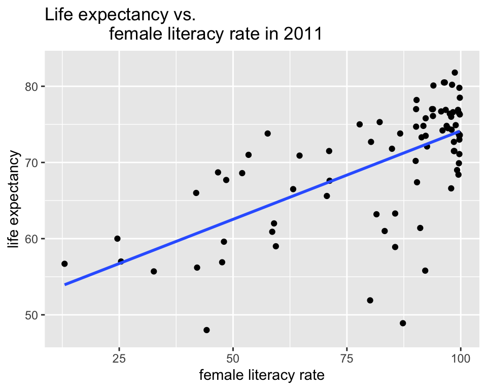
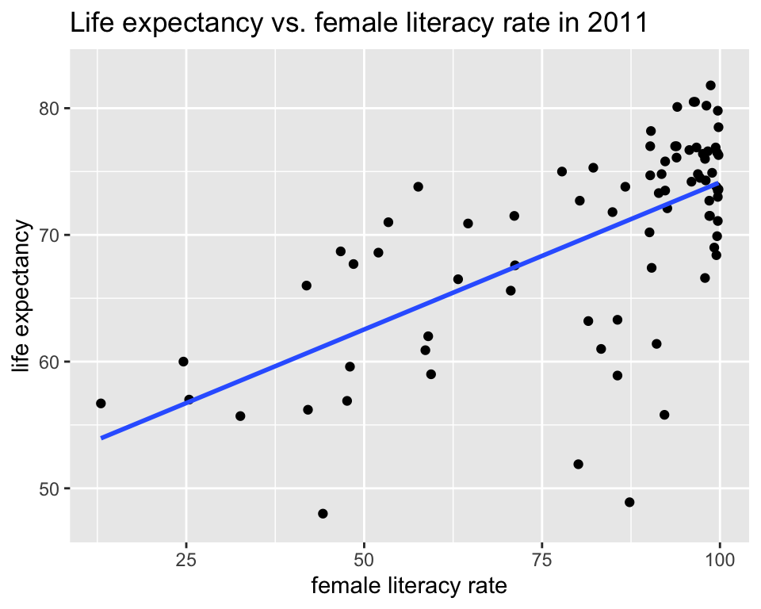
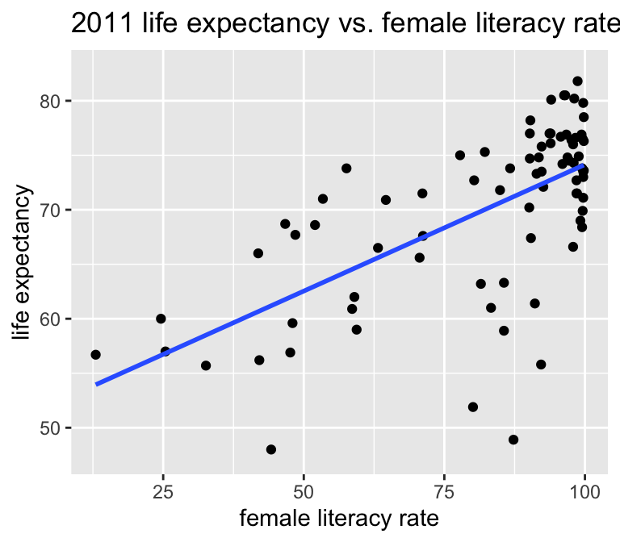
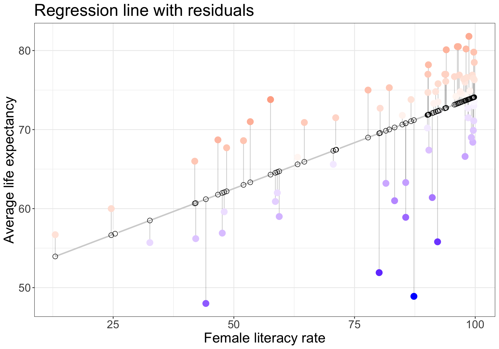
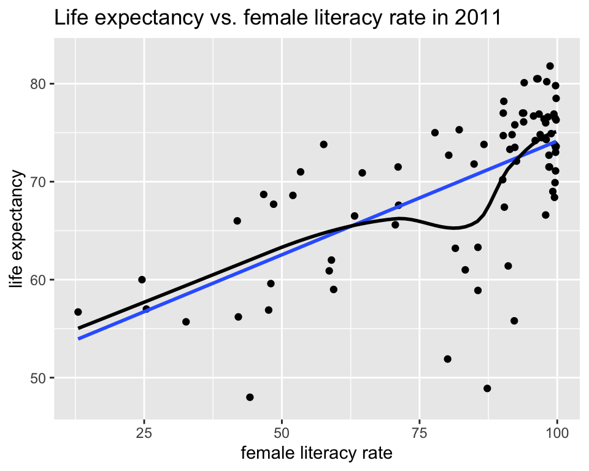

# run these every time you open Rstudio
library(tidyverse)
library(oibiostat)
library(janitor)
library(rstatix)
library(knitr)
library(gtsummary)
library(moderndive)
library(gt)
library(broom)
library(here)
library(pwr) Day 15: Simple Linear Regression (Sections 6.1-6.2)
Week 6
Load packages
- Packages need to be loaded every time you restart R or render an Qmd file
- You can check whether a package has been loaded or not
- by looking at the Packages tab and
- seeing whether it has been checked off or not
Goals for Day 15: Simple Linear Regression (Sections 6.1-6.2)
- Associations between two variables
- Correlation review
- Simple linear regression: regression with one numerical explanatory variable
- How do we
- calculate slope & intercept?
- interpret slope & intercept?
- Next time:
- do inference for slope & intercept? (CI, p-value)
- do prediction with regression line?
- Regression in R
- Residuals
- (Population) regression model
- LINE conditions
- Does the model fit the data well?
- Should we be using a line to model the data?
- Does the model fit the data well?
- Should we add additional variables to the model? Take BSTA 512 to answer that (multiple regression)
Life expectancy vs. female adult literacy rate
Dataset description
Data file:
lifeexp_femlit_water_2011.csvData were downloaded from https://www.gapminder.org/data/
2011 is the most recent year with the most complete data
Life expectancy = the average number of years a newborn child would live if current mortality patterns were to stay the same. Source: https://www.gapminder.org/data/documentation/gd004/
Adult literacy rate is the percentage of people ages 15 and above who can, with understanding, read and write a short, simple statement on their everyday life. Source: http://data.uis.unesco.org/
At least basic water source (%) = the percentage of people using at least basic water services. This indicator encompasses both people using basic water services as well as those using safely managed water services. Basic drinking water services is defined as drinking water from an improved source, provided collection time is not more than 30 minutes for a round trip. Improved water sources include piped water, boreholes or tubewells, protect dug wells, protected springs, and packaged or delivered water.
Get to know the data
gapm <- read_csv(here::here("data", "lifeexp_femlit_water_2011.csv"))
glimpse(gapm)Rows: 194
Columns: 5
$ country <chr> "Afghanistan", "Albania", "Algeria", "Andor…
$ life_expectancy_years_2011 <dbl> 56.7, 76.7, 76.7, 82.6, 60.9, 76.9, 76.0, 7…
$ female_literacy_rate_2011 <dbl> 13.0, 95.7, NA, NA, 58.6, 99.4, 97.9, 99.5,…
$ water_basic_source_2011 <dbl> 52.6, 88.1, 92.6, 100.0, 40.3, 97.0, 99.5, …
$ water_2011_quart <chr> "Q1", "Q2", "Q2", "Q4", "Q1", "Q3", "Q4", "…summary(gapm) country life_expectancy_years_2011 female_literacy_rate_2011
Length:194 Min. :47.50 Min. :13.00
Class :character 1st Qu.:64.30 1st Qu.:70.97
Mode :character Median :72.70 Median :91.60
Mean :70.66 Mean :81.65
3rd Qu.:76.90 3rd Qu.:98.03
Max. :82.90 Max. :99.80
NA's :7 NA's :114
water_basic_source_2011 water_2011_quart
Min. : 18.30 Length:194
1st Qu.: 74.90 Class :character
Median : 93.50 Mode :character
Mean : 84.84
3rd Qu.: 99.08
Max. :100.00
Association between life expectancy and female literacy rate
ggplot(gapm,
aes(x = female_literacy_rate_2011,
y = life_expectancy_years_2011)) +
geom_point() +
labs(x = "female literacy rate",
y = "life expectancy",
title = "Life expectancy vs.
female literacy rate in 2011") +
geom_smooth(method = "lm",
se = FALSE)Warning: Removed 114 rows containing non-finite outside the scale range
(`stat_smooth()`).Warning: Removed 114 rows containing missing values or values outside the scale range
(`geom_point()`).
- Is there a relationship between the two variables?
- Is it positive or negative?
- Strong, moderate, or weak?
- Is it linear?
Dependent vs. independent variables
Warning: Removed 114 rows containing non-finite outside the scale range
(`stat_smooth()`).Warning: Removed 114 rows containing missing values or values outside the scale range
(`geom_point()`).
- \(y\) = dependent variable (DV)
- also called the outcome or response variable
- \(x\) = independent variable (IV)
- also called the predictor variable
- or regressor in a regression analysis
- How to determine which is which?
Correlation between life expectancy and female literacy rate
- The base R function for calculating the correlation coefficient is
cor(). - This can be used within summarize.
gapm %>%
summarize(correlation = cor(life_expectancy_years_2011,
female_literacy_rate_2011,
use = "complete.obs"))# A tibble: 1 × 1
correlation
<dbl>
1 0.641# base R:
cor(gapm$life_expectancy_years_2011,
gapm$female_literacy_rate_2011,
use = "complete.obs")[1] 0.6410434(Pearson) Correlation coefficient (r)
- A bivariate summary statistic since calculated using two variables
- -1 indicates a perfect negative linear relationship: As one variable increases, the value of the other variable tends to go down, following a straight line.
- 0 indicates no linear relationship: The values of both variables go up/down independently of each other.
- 1 indicates a__ perfect positive linear relationship__: As the value of one variable goes up, the value of the other variable tends to go up as well in a linear fashion.
\[r = \frac{1}{n-1}\sum_{i=1}^{n}\Big(\frac{x_i - \bar{x}}{s_x}\Big)\Big(\frac{y_i - \bar{y}}{s_y}\Big)\]
Regression line = best-fit line
\[\widehat{y} = b_0 + b_1 \cdot x \]
- \(\hat{y}\) is the predicted outcome for a specific value of \(x\).
- \(b_0\) is the intercept
- \(b_1\) is the slope of the line, i.e., the increase in \(\hat{y}\) for every increase of one (unit increase) in \(x\).
- slope = rise over run
Warning: Removed 114 rows containing non-finite outside the scale range
(`stat_smooth()`).Warning: Removed 114 rows containing missing values or values outside the scale range
(`geom_point()`).
]
Interpreting coefficients
- Intercept
- The expected outcome for the \(y\)-variable when the \(x\)-variable is 0.
- Slope
- For every increase of 1 unit in the \(x\)-variable, there is an expected increase of, on average, \(b_1\) units in the \(y\)-variable.
- We only say that there is an expected increase and not necessarily a causal increase.
Correlation coefficient vs. slope
- Not the same!!!
- Directly related though:
\[b_1 = r\frac{s_y}{s_x}\]
where \(s_x\) and \(s_y\) are the standard deviations of the \(x\) and \(y\) variables.
The correlation coefficient can be computed using the formula below.
\[r = \frac{1}{n-1}\sum_{i=1}^{n}\Big(\frac{x_i - \bar{x}}{s_x}\Big)\Big(\frac{y_i - \bar{y}}{s_y}\Big)\]
We will be using R to do these calculations.
How is the best-fit line calculated? (1/3)
https://www.rossmanchance.com/applets/2021/regshuffle/regshuffle.htm
How is the best-fit line calculated? (2/3)
Observed values \(y_i\) are the values in the dataset
Fitted values \(\widehat{y}_i\) are the values that fall on the best-fit line for a specific \(x_i\)
Residuals \(e_i = y_i - \widehat{y}_i\) are the differences between the two.
The best-line is minimizing “how far” the residuals are from the best-fit line * However, if we add all the residuals we get 0. ( \(\sum_{i=1}^n e_i = 0\) ) * Thus instead, we add the squares of the residuals, which is always positive, and minimize the sums of the squares ( \(\sum_{i=1}^n e_i^2 \geq 0\) ) - which is why the best-fit line is often called the least-squares line * This is the same as minimizing the combined area of all the “residual squares” we were looking at in the applet.
Regression model with residuals
- Observed values \(y_i\)
- the values in the dataset
- Fitted values \(\widehat{y}_i\)
- the values that fall on the best-fit line for a specific \(x_i\)
- Residuals \(e_i = y_i - \widehat{y}_i\)
- the differences between the observed and fitted values
# code from https://drsimonj.svbtle.com/visualising-residuals
model1 <- lm(life_expectancy_years_2011 ~ female_literacy_rate_2011,
data = gapm)
regression_points <- augment(model1)
ggplot(regression_points,
aes(x = female_literacy_rate_2011,
y = life_expectancy_years_2011)) +
geom_smooth(method = "lm", se = FALSE, color = "lightgrey") +
geom_segment(aes(
xend = female_literacy_rate_2011,
yend = .fitted),
alpha = .2) +
# > Color adjustments made here...
geom_point(aes(color = .resid), size = 4) + # Color mapped here
scale_color_gradient2(low = "blue", mid = "white", high = "red") + # Colors to use here
guides(color = "none") +
geom_point(aes(y = .fitted), shape = 1, size = 3) +
labs(x = "Female literacy rate",
y = "Average life expectancy",
title = "Regression line with residuals") +
theme_bw() +
theme(text = element_text(size = 20)) 
How is the best-fit line calculated? (3/3)
In math-speak, we need to find the values \(b_0\) and \(b_1\) that minimize the equation:
\[\sum_{i=1}^n e_i^2 = \sum_{i=1}^n (y_i - \hat{y_i})^2 = \sum_{i=1}^n (y_i - b_0 -b_1 x_i)^2\]
where
- \(y_i\) are the values in the dataset
- with \(n\) datapoints and
- \(\widehat{y_i}\) are the fitted values that fall on the best-fit line for a specific value \(x_i\).
How do we find the minimum values of an equation???
If you want to see the mathematical details, check out pages 222-223 (pdf pages 10-11) of https://www.stat.cmu.edu/~hseltman/309/Book/chapter9.pdf.
\[b_0 = \bar{y} - b_1\bar{x}, \ \ \ \ \ \ \ \ \ b_1 = \frac{\sum_{i=1}^n (x_i - \bar{x})(y_i - \bar{y})}{\sum_{i=1}^n (x_i - \bar{x})^2} = r\frac{s_y}{s_x}\]
Regression in R
- We will use R to run a simple linear regression using the command
lm(). - The regression output gives us the coefficients (intercept and slope) for the regression line (along with other statistics that we will cover later in the course).
##summary()
model1 <- lm(life_expectancy_years_2011 ~ female_literacy_rate_2011,
data = gapm)
summary(model1)
Call:
lm(formula = life_expectancy_years_2011 ~ female_literacy_rate_2011,
data = gapm)
Residuals:
Min 1Q Median 3Q Max
-22.299 -2.670 1.145 4.114 9.498
Coefficients:
Estimate Std. Error t value Pr(>|t|)
(Intercept) 50.92790 2.66041 19.143 < 2e-16 ***
female_literacy_rate_2011 0.23220 0.03148 7.377 1.5e-10 ***
---
Signif. codes: 0 '***' 0.001 '**' 0.01 '*' 0.05 '.' 0.1 ' ' 1
Residual standard error: 6.142 on 78 degrees of freedom
(114 observations deleted due to missingness)
Multiple R-squared: 0.4109, Adjusted R-squared: 0.4034
F-statistic: 54.41 on 1 and 78 DF, p-value: 1.501e-10- Above we first “fit” the linear regression model to the data using the
lm()function and save this asmodel1.- By “fit”, we mean “find the best fitting line to this data”, which we will discuss later.
lm()stands for “linear model” and is used as follows:lm(y ~ x, data = data_name)where:yis the outcome variable, followed by a tilde~. Above,yis set tolife_expectancy_years_2011.xis the explanatory variable. Above,xis set tofemale_literacy_rate_2011.
tidy() model
tidy(model1) %>% gt()| term | estimate | std.error | statistic | p.value |
|---|---|---|---|---|
| (Intercept) | 50.9278981 | 2.66040695 | 19.142898 | 3.325312e-31 |
| female_literacy_rate_2011 | 0.2321951 | 0.03147744 | 7.376557 | 1.501286e-10 |
Regression equation
The values in the estimate column are the intercept and slope of the regression model.
tidy(model1) %>% gt()| term | estimate | std.error | statistic | p.value |
|---|---|---|---|---|
| (Intercept) | 50.9278981 | 2.66040695 | 19.142898 | 3.325312e-31 |
| female_literacy_rate_2011 | 0.2321951 | 0.03147744 | 7.376557 | 1.501286e-10 |
Generic regression equation:
\[\widehat{y} = b_0 + b_1 \cdot x \]
Regression equation for our model:
\[\widehat{\textrm{life expectancy}} = 50.9 + 0.232 \cdot \textrm{female literacy rate} \]
Interpretation of coefficients
\[\widehat{\textrm{life expectancy}} = 50.9 + 0.232 \cdot \textrm{female literacy rate} \]
Interpretation of the intercept for this example. Is it meaningful?
- The average life expectancy in 2011 for countries with no literate female adults was on average 50.9 years.
Interpretation of the slope for this example.
- For every 1 point increase in a country’s female literacy rate, we expect an average 0.232 year increase in the country’s average life expectancy.
The (Population) Regression Model
The regresison model
- The (population) regression model is denoted by
\[y = \beta_0 + \beta_1 \cdot x + \epsilon\]
\(\beta_0\) and \(\beta_1\) are unknown population parameters
\(\epsilon\) (epsilon) is the error about the line
- It is assumed to be a random variable with a
- normal distribution with
- mean 0 and
- constant variance \(\sigma^2\)
- It is assumed to be a random variable with a
The line is the average (expected) value of \(Y\) given a value of \(x\): \(E(Y|x)\).
The point estimates based on a sample are denoted by \(b_0, b_1, s_{residuals}^2\)
- Note: also common notation is \(\widehat{\beta}_0, \widehat{\beta}_1, \widehat{\sigma}^2\)
The regresison model visually
\[y = \beta_0 + \beta_1 \cdot x + \epsilon, \text{ where } \epsilon \sim N(0, \sigma^2)\]
See slides for figure.
What are the LINE conditions?
For “good” model fit and to be able to make inferences and predictions based on our models, 4 conditions need to be satisfied.
Briefly:
- __L__inearity of relationship between variables
- __I__ndependence of the Y values
- __N__ormality of the residuals
- __E__quality of variance of the residuals (homoscedasticity)
- L : there is a linear relationship between the mean response (Y) and the explanatory variable (X),
- I : the errors are independent—there’s no connection between how far any two points lie from the regression line,
- N : the responses are normally distributed at each level of X, and
- E : the variance or, equivalently, the standard deviation of the responses is equal for all levels of X.
L: Linearity of relationship between variables
Is the association between the variables linear?
ggplot(gapm, aes(x = female_literacy_rate_2011,
y = life_expectancy_years_2011)) +
geom_point() +
labs(x = "female literacy rate",
y = "life expectancy",
title = "Life expectancy vs. female literacy rate in 2011") +
geom_smooth(method = "lm", se = FALSE) +
geom_smooth(se = FALSE, color = "black")Warning: Removed 114 rows containing non-finite outside the scale range
(`stat_smooth()`).
Removed 114 rows containing non-finite outside the scale range
(`stat_smooth()`).Warning: Removed 114 rows containing missing values or values outside the scale range
(`geom_point()`).
I: Independence of the residuals
Are the data points independent of each other?
Examples of when they are not independent, include
- repeated measures (such as baseline, 3 months, 6 months)
- data from clusters, such as different hospitals or families
This condition is checked by reviewing the study design and not by inspecting the data
How to analyze data using regression models when the \(Y\)-values are not independent is covered in BSTA 519 (Longitudinal data)
N: Normality of the residuals
- The responses Y are normally distributed at each level of x
- Next time we will go over how to assess this
See slides for figure.
E: Equality of variance of the residuals
- The variance or, equivalently, the standard deviation of the responses is equal for all values of x.
- This is called homoskedasticity (top row)
- If there is heteroskedasticity (bottom row), then the assumption is not met.
See slides for figure.
We will discuss how to assess this next time.